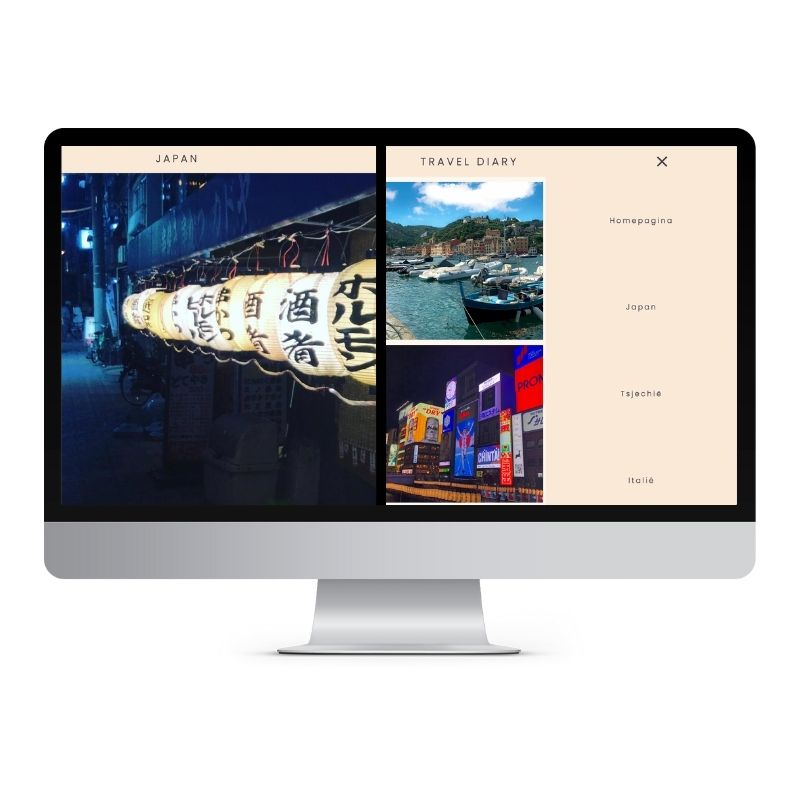

Internetstandaarden
Voor het vak internetstandaarden werd ik geintroduceerd met coderen. Ik had al enige ervaring maar dat was alweer een paar jaar geleden. Voor het dit vak heb ik besloten om een travel diary te maken voor plekken waar ik al heen ben gereisd. Op deze site geef ik leuke tips en plekjes die leuk zijn om te bezoeken.
Door Internetstandaarden ben ik weer opnieuw achter gekomen dat ik coderen leuk vind. Ik doe het nu ook steeds vaker in mijn vrije tijd. Vandaar dat mijn portfolio ook gemaakt is met code.